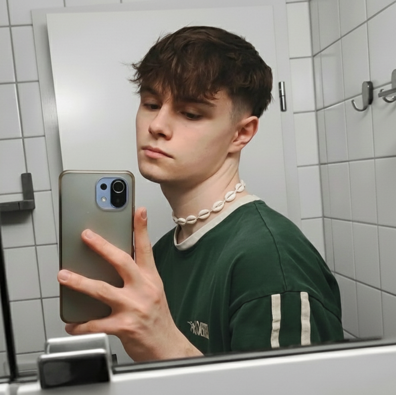

Über mich
Kurz zu mir
Ich bin Tobias Erhardt, 22, und studiere Medieninformatik mit Schwerpunkt Film an der Hochschule Flensburg. Wohnhaft bin ich ebenfalls in Flensburg.
Wie alles begann
Technik, Medien und Games haben mich begleitet, solange ich denken kann. Aufgewachsen mit so ziemlich jeder Nintendo-Konsole und von Anfang an mit Social Media konfrontiert, war klar, dass digitale Inhalte irgendwann auch beruflich eine Rolle spielen würden.
Privat habe ich bereits rund sechs PCs für mich und Freunde zusammengebaut – die Recherche nach der perfekten, harmonierenden Hardware-Kombination macht mir dabei genauso Spaß wie der Zusammenbau selbst. Auf Social Media bin ich vor allem als Beobachter unterwegs, früher habe ich aber auch eigene Gameplay-Videos geschnitten. Das Erstellen von Videos und Clips hat mich dabei am meisten gepackt – etwas zu erschaffen, auf das man später zurückblicken kann.
Was mich interessiert
Am meisten interessiert mich das Produzieren und Schneiden von Videos. Besonders die Arbeit an Kurzfilmen reizt mich – sich Handlung und passende Shots auszudenken und diese dann umzusetzen, vor allem die Planung dahinter. Daneben beschäftige ich mich auch mit Bildbearbeitung und Webdesign.
Skills & Tools
Teils durchs Studium, teils im Selbststudium beherrsche ich folgende Programme und Sprachen: DaVinci Resolve, Adobe Photoshop, Adobe Illustrator, GIMP, HTML, CSS und Java – sowie die Broadcasting-Software OBS.
Was mich antreibt
Mich treibt vor allem an, am Ende eines Projekts auf das Ergebnis zurückblicken und stolz darauf sein zu können – egal ob bearbeitetes Bild, Video, Kurzfilm oder Clip. Mit jedem Projekt sammle ich zudem mehr Erfahrung, sowohl allgemein als auch mit der jeweiligen Software. Oft verliere ich mich in kleinen Details – aber gerade auf die bin ich im Nachhinein am meisten stolz, wenn sie genau so geworden sind, wie ich es mir vorgestellt hatte.
Abseits des Bildschirms
Neben dem Studium begeistert mich vor allem Gaming, sowohl auf dem PC als auch auf Nintendo-Konsolen. Daneben sind Fitness und Fußball seit jeher feste Bestandteile meines Alltags.